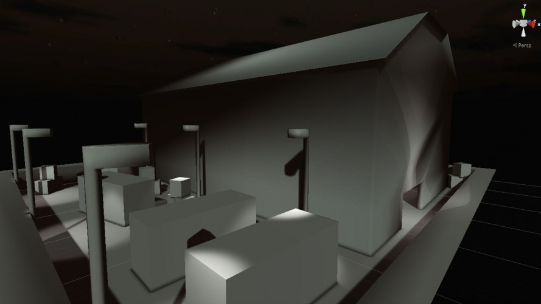

Lurker

Description
This is a stealth action mole game, Think solid mole. The second screenshot is a picture made by a friend. I hope this is allowed as it is not used in the game, more as a separate logo for the ludum post. A port to mobile or a more polished version might be in the works. Depends how bored I am next week.
Screenshots & Images

Play The Game
Feedback & Comments
AestheticGamer (Apr 28, 2014): "Unfortunately a little bit too buddy. I was walking through walls like nobodies business, and the sighting system was weird, and eventually I dug out of the level and went soaring to kingdom come. Not bad, but felt a little too broken at this stage."
jtpup0 (Apr 28, 2014): "Amazing concept, a stealth game where you dig a hole and pop out again is something I've never seen done quite like this before... Very buggy but fun and functional."
dook (Apr 28, 2014): "Great idea, with the right level design this could be really fun. It was super buggy, though. I started by falling through the level a few times. And the camera controls were confusing. But great effort for a compo game! :)"
Solifuge / Vector from Victory Garden (Apr 29, 2014): "This is a really cute idea, but I couldn't figure out what I was supposed to be doing or where I was supposed to be going, or even really where I was in the level. There's a reason why Snake has a Soliton Radar system!"
MunkeeBacon (Apr 30, 2014): "Pretty good for 48 hours, it was a little bit annoying seeing my mouse move all over the screen :P"
Meedoc (May 1, 2014): "A nice concept but the game is a bit buggy; it's hard to predict enemy movement, and to see them. Good idea, I liked the theme use!"
tidalkraken (Apr 28, 2014): "Great vibe, rough around the edges but hey, it's a 48-hour game!"